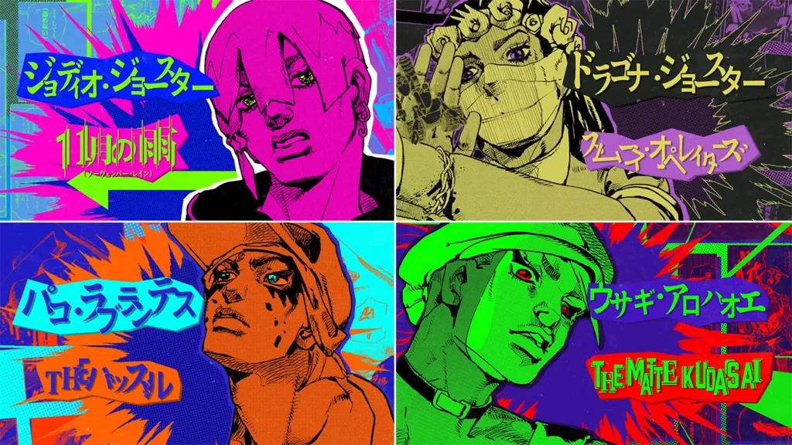

JoJo's Bizarre Adventure
The JOJOLands (ザ・ジョジョランズ Za JoJoranzu) é a nona parte de JoJo's Bizarre Adventure. Ela foi anunciada na edição de setembro de 2021 em 19 de agosto de 2021, e começou sua serialização na edição de março de 2023 em 17 de fevereiro de 2023.
The JOJOLands representa a terceira parte no segundo universo, que se passa no Havaí.
Resumo
A história se passa no Havaí, Estados Unidos. O próprio Jodio Joestar faz a introdução contando que se tornará rico naquelas ilhas. Na mesma página, podemos vê-lo em um barco na direção de um vulcão em erupção.
Tudo começa em uma estrada em Oahu. Dois policiais param uma picape a fim de interrogar o motorista. O carona e o motorista são dois jovens aparentemente normais: uma bela mulher e um garoto, Jodio. Um dos policiais ordena que a mulher saia do carro, supostamente para revistá-la, e a molesta. Para a surpresa dele, durante a revista, ele descobre que a mulher na verdade é um homem, mas isso o deixa ainda mais interessado. Enfurecido, porém não aparente, o jovem sai do carro de repente para defender seu "irmão mais velho". Nas cenas seguintes, os irmãos usam seus stands para acabar com os policiais e queimam a viatura para se livrar das evidências. Após isso, ambos seguem viagem até um local e finalizam uma venda de drogas para uma quadrilha.
O rapaz, Jodio, apresenta a si mesmo e sua família, incluindo seu irmão, Dragona Joestar, que se parece com uma mulher e age igualmente. Ele também comenta sobre seus laços sanguíneos com a família Joestar e seus ideais sobre a vida. Jodio fala sobre a escola e o vemos no ônibus. Ao descer, ele disfarça uma venda de drogas para um de seus veteranos. Jodio, então, continua sua narração sobre seu sonho de enriquecer e exemplifica um conceito de "mecanismos", algo que ele leva para a vida. No mesmo dia, Jodio, Dragona e o parceiro deles, Paco Laburantes, encontram-se com Meryl Mei Qi, a chefe do grupo. Meryl informa a eles que um rico turista japonês chegou sozinho ao Havaí em posse de um diamante valiosíssimo e os manda para uma missão de arrombamento: roubar esse diamante. Para a surpresa dos três, Meryl acrescenta ao grupo o veterano de Jodio, a quem ele e Paco haviam vendido drogas mais cedo.
Antes de seguir com a missão, Jodio e Paco partem para outra venda. Na rua South King, em Oahu, uma mulher se aproxima de Jodio apresentando-se como amiga de uma conhecida dele, embora Jodio negue saber de quem ela está falando. A mulher tenta comprar dele, mas Jodio suspeita que ela é uma policial. Em vez de ir embora, ela induz Jodio a perguntar se ela é ou não uma policial, alegando que os policiais não são autorizados a mentir em uma investigação. Jodio pergunta, e ela responde que não. Após acreditar nela, ele e Paco finalizam a venda para a mulher. Ela então puxa imediatamente sua arma e seu distintivo, revelando ser uma agente disfarçada da DEA. Ela detém Jodio e Paco com a ajuda de policiais que estavam em um caminhão de sorvete nas proximidades. O policial que prende Jodio indaga se ele o reconhece e zomba dele perguntando como vai seu "lindo irmão". Ele ameaça levar os dois irmãos para uma sala escura e molestá-los. Furioso, Jodio usa o November Rain para destruir o saco de drogas, forçando a polícia a deixá-lo ir, já que não há mais provas.

odio traz à tona um momento do passado em que foi obrigado a pagar por um teste mental em sua escola, onde o psicoterapeuta o diagnosticou com sociopatia. Sua mãe, Barbara Ann, não acreditou no diagnóstico e exigiu um reembolso. Jodio acredita que pode ser feliz se correr atrás disso, mas afirma que no caminho acaba esbarrando com pessoas que não jogam limpo, como aqueles policiais, e que isso o deixa extremamente irritado.
o dia marcado para o arrombamento, Jodio, Dragona e Paco voam juntos para a Ilha Havaí e esperam Usagi Alohaoe, o novo membro, no aeroporto. Usagi chega atrasado e brinca sobre isso. Ele leva o grupo à locadora de automóveis para alugarem um carro e seguir viagem. Usagi assegura que o carro não deixará rastros, pois a empresa também aluga carros sem câmeras de bordo e sem histórico de GPS.
O grupo parte rumo à casa de veraneio do turista japonês e Jodio faz um reconhecimento do lugar. Ele observa algumas bebidas em uma mesa perto da piscina e também uma toalha e um iPad, sugerindo que o japonês ficará na área da piscina por um certo tempo. Isso dá ao grupo uma oportunidade de entrar sorrateiramente para realizar o roubo. No caminho, eles veem um gato circulando pelo lugar. Usagi revela seu stand, THE MATTEKUDASAI, que então se transforma em uma segunda câmera de segurança para produzir uma gravação falsa do grupo com seus rostos disfarçados enquanto invadem a casa. Jodio fica de olho na piscina e reconhece o turista japonês: Rohan Kishibe, um mangaká famoso